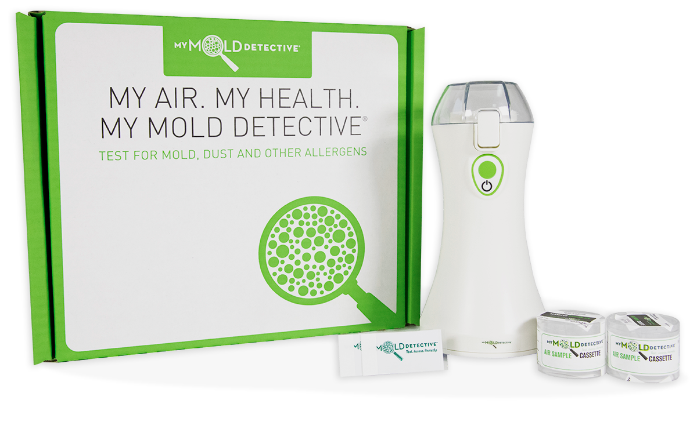

Mold can hide in the spaces your family uses every day. My Mold Detective makes it simple to test your home's air and surfaces with an at-home professional-grade mold test kit and clear online lab results.
When you're responsible for your family's home, even small signs can feel stressful. A musty smell in the playroom. Water stains near the ceiling. Allergy symptoms that seem worse indoors. A damp basement, bathroom, crawlspace, or laundry room that never feels fully dry.
You don't need to panic, and you don't need to ignore it. My Mold Detective helps you take the next step with professional-grade testing that gives you real insight into your home's air quality.
That lingering smell could be a sign it's time to test.
Past moisture can create the right conditions for mold growth.
If symptoms feel worse at home, testing can help you investigate.
Surface samples can help identify mold on visible areas.
Get peace of mind before your family settles in.
Test after cleanup to help confirm the space is safer.
You check labels, choose safer products, clean the surfaces your kids touch, and do everything you can to create a healthy home. But the air your family breathes every day is just as important.
My Mold Detective gives families an easy way to look closer at indoor air quality, especially in spaces where moisture, odors, or allergy concerns may be present. With professional-grade testing and lab-reviewed results, you can stop guessing and start making informed decisions.
Test the areas your family uses most — bedrooms, bathrooms, playrooms, basements, kitchens, laundry rooms, and HVAC-adjacent spaces.
Sampling is simple and designed for everyday homeowners. The air sampling process can be completed in a fast, five-minute session.
Your samples are sent to an accredited laboratory for analysis, helping you understand what was found in your air or on tested surfaces.
An affordable first step compared to hiring a mold professional, helping families get answers without starting with a costly inspection.
Each kit includes air sampling and a tape lift surface sample so you can test indoor air, compare it to outdoor air, and check visible areas.
The My Mold Detective Mold Test Kit includes the tools needed to collect air and surface samples from your home, then send them in for professional lab analysis.
Use the kit to take indoor air, outdoor air, and surface samples. The outdoor sample creates a comparison point for what's happening inside.
Register your samples online using the serial numbers included with your air cassettes and surface samples.
Place samples in the included FedEx envelope, attach the pre-addressed label, and send them to the laboratory.
Once analysis is complete, you'll receive an email notification that your easy-to-read lab report is ready to view online.
If something feels off in your home, testing can be a simple way to get more clarity. My Mold Detective can be a helpful next step when your family is dealing with any of the situations on the right.
Check Your Home's Air QualityYou shouldn't need to be a mold expert to understand what may be happening inside your home. My Mold Detective uses professional-grade testing methods and provides an easy-to-read report that helps explain whether mold concentration levels are Normal, Slightly Elevated, or Elevated.
Air and surface methods designed for accurate collection.
Built around industry testing standards.
Samples are reviewed by an accredited laboratory.
Clear concentration levels — no expert required.
Express analysis available when you need answers sooner.
Your results are delivered in a customized online lab report, so you can review your findings without sorting through confusing paperwork. The report helps you understand what was detected and how your indoor sample compares.
This was the easiest and most reliable test I could find. When the inspector came and reviewed the results, he was impressed at the detail of the report. It was definitely worth every single penny.
So easy to use. Saved me thousands of dollars after cleaning up water damage myself to make sure the area was safe.
Everything you need to know before testing — from how easy sampling is, to lab fees, to what your report will look like.
Our customer support team is here to help walk you through testing or interpreting your results.
Contact supportIf you're worried about mold, don't wait and wonder. My Mold Detective gives you an easy, affordable way to test your home's air and surfaces with professional-grade sampling and lab-reviewed results.